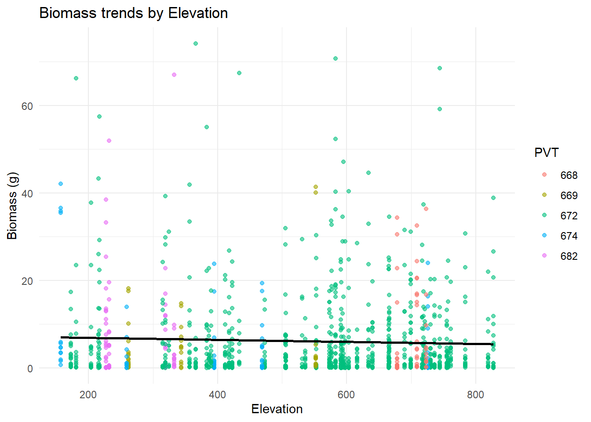
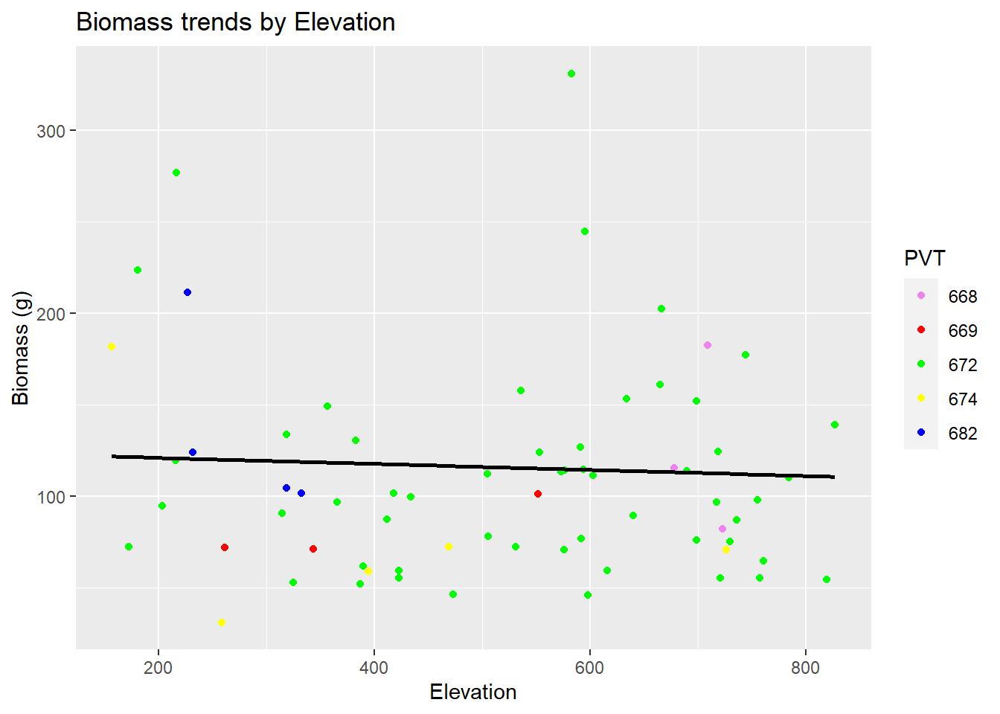

Welcome to the fascinating world of biomass and percent cover
Author
Alexis Means
Published
January 25, 2023
Ignore this first chunk of code, this is just a bunch of rambling for me to create the table that I wanted to view all of my data within.
Code
library(tidyverse)library(terra)setwd("C:/Users/Alexis Means/Documents/Project/Nutrition Sampling/R code")#load in objectsbiomass <-read.csv("C:/Users/Alexis Means/Documents/Project/Nutrition Sampling/R code/Cleaning/processed.data/biomass.csv")comp <-read.csv("C:/Users/Alexis Means/Documents/Project/Nutrition Sampling/R code/Cleaning/processed.data/comp.csv")transect <-read.csv("C:/Users/Alexis Means/Documents/Project/Nutrition Sampling/R code/Cleaning/processed.data/transect.csv")plant <-read.csv("C:/Users/Alexis Means/Documents/Project/Nutrition Sampling/R code/Cleaning/processed.data/plant_list.csv")#Organizing and joining databases#####create object for inorganic matterabiotic <-c("LITTER","EARTH", "LICHEN", "WATER", "ROCKS")#combining and creating an overall %cover for inorganic matter in each quadratcomp <- comp %>%group_by(PlotID, Quadrat) %>%mutate(Abiotic.cover =sum(Percent[(Spp %in% abiotic)])) %>%ungroup()#Left join biomass and comp by quadrat and plot_IDcomp <- comp %>%left_join(y = biomass,by =c("PlotID", "Quadrat", "Spp", "Pheno", "Part")) #filtering out all quadrats where no biomass is recorded for the quadrat#filter out all of the abiotic observationscomp <- comp %>%filter(!(Percent %in% abiotic)) %>%filter(!is.na(DryWeight.g.))## left join columns from plant list, comp, biomass and transect to keep the necessary columns plant <- plant %>%select(Spp, Genus, Family, FunctionalGroup, Species)comp <- comp %>%left_join(y = plant,by ="Spp")comp <- comp %>%select(-Dates.y, -ActualName.y, -Stage.y)transect <- transect %>%select(PVT, PlotID, BeginUTM_Northing, BeginUTM_Easting)comp <- comp %>%left_join(y=transect,by ="PlotID", relationship ="many-to-one") #since there is multiple plotID duplicates this is necessary to join the transect database#Loading Covariates#####create empty list to load the covariates intocovariates <-vector(mode ='list')#List all the covariates that you want to usecovariates$asp <-rast("C:/Users/Alexis Means/OneDrive/OneDrive - University of Idaho/DocuMents/Project/Nutrition Sampling/Rasters/LF_Asp/LC20_Asp_220.tif")covariates$elev <-rast("C:/Users/Alexis Means/OneDrive/OneDrive - University of Idaho/DocuMents/Project/Nutrition Sampling/Rasters/LF_Elev/LC20_Elev_220.tif")#can add more covariates here without updating for loop#make a shape object out of the coordinates that exist in compcoords <-vect(comp,geom =c("BeginUTM_Easting","BeginUTM_Northing"),crs ="EPSG:32610")#create a for loop#### #goes over each covariate raster that we have and #reprojecting the UTM points into the the same ESPG of the imported rastersfor (i in1:length(covariates)){ proj.coords =project(x = coords,y = covariates[[i]]) out =extract(x = covariates[[i]],y = proj.coords) comp[,names(covariates[i])] = out [,2]}## THIS IS A CHECK IF YOU NEED IT# helps plot points to troubleshoot#i =1#proj.coords = project(x = coords,# y = covariates[[i]])#plot(covariates[[1]])#points(proj.coords)#restructured comp dataframe#####to make more readable and made sure that my variables#are being read correctly before continuing (as a number or categorical variable)comp1 <- comp %>%select(PlotID, Spp, Family, Genus, ActualName.x, FunctionalGroup, DryWeight.g., Percent, Julian_Day.x, PVT, Abiotic.cover, elev, asp)#If there are any 0 values it corrects them to 0.01comp1$DryWeight.g. =ifelse(comp1$DryWeight.g. ==0, .01, comp1$DryWeight.g.)#make sure everything is being read the way we want it to comp1$elev =as.numeric(comp1$elev)comp1$Family =as.factor(comp1$Family)comp1$Genus=as.factor(comp1$Genus)comp1$ActualName.x=as.factor(comp1$ActualName.x)comp1$Spp=as.factor(comp1$Spp)comp1$DryWeight.g.=as.numeric(comp1$DryWeight.g.)comp1$PVT=as.factor(comp1$PVT)#calculate sample size for each hierarchical group#####speciescomp1 <- comp1 %>%group_by(ActualName.x) %>%mutate(n.Species =sum(!is.na(ActualName.x))) %>%ungroup()comp1 <- comp1 %>%group_by(Genus) %>%mutate(n.Genus =sum(!is.na(Genus))) %>%ungroup()comp1 <- comp1 %>%group_by(Family) %>%mutate(n.Family =sum(!is.na(Family))) %>%ungroup()comp1 <- comp1 %>%group_by(FunctionalGroup) %>%mutate(n.FunctionalGroup =sum(!is.na(FunctionalGroup))) %>%ungroup()comp1 <- comp1 %>%rename(julian = Julian_Day.x)
Expressiveness and Effectiveness
Species- Richness
Ultimately with my data, I hope to be able to determine any differences in nutritional quality between differing vegetation communities. Before I get to that point, I want to do some simple comparisons of the 5 different vegetation communities that I sampled. With my first graph I want to compare the species richness (number of species observed) between my vegetation communities.
Figure 1 Shows the number of unique species that were identified in each vegetation community. Because some of the names are so obnoxiously long, I decided it was more effective to color each box and use a key to identify the different communities. I was surprised to see that the scabland shrubland community had the greatest biodiversity. A lot of our sampling was done within the grassland community because it makes up a majority of our study area, so I expected that or the riparian area to have the greatest diversity. The more you know I guess.
PVT Species Composition
If I wanted to approach this slightly different and make it really overwhelming, I could look at the composition of species observed in each community instead of the richness and show each species in a stacked bar graph.
Figure 2 is a mess of squished colors and scientific names that most people don’t know or care about when making this comparison. It also does not get the same point across that I do when comparing species richness. Since I sampled the grassland community so much, comparing its diversity to the other vegetation communities is inconsistent and does not demonstrate the diversity of that community. Believe it or not I also had to limit the number of names to the top 30 within the legend to make the graph even remotely readable.
Descriminability
Phenology Timing
One of the big things that I was trying to capture with my data is the “green-up” of the vegetation throughout the summer. To do so I had to make sure I was sampling early enough to get most of my species in their newly emergent stage (N) and make sure I continued to sample until a majority of the vegetation reached senescence (C).
Figure 3 shows the progression of phenology stages throughout my sampling time frame for all of the species that I observed. By breaking it into months it allows me to compare how each of the phenological stages progressed, and determine if I think I accurately captured the speed at which the nutritional landscape progresses.
Code
ggplot(filter_pheno, aes(x = Julian_Day.x, color = Pheno)) +geom_line(stat ="count", linewidth =1.2) +scale_color_viridis_d(option ="viridis", begin =0, end =1, name ="Phenology State") +labs(title ="Phenology Trends Over Time",x ="Julian Day",y ="# of Observations" ) +theme_minimal() +theme(strip.text =element_text(size =12, face ="bold"),legend.position ="right" )
Figure 4 wow this one was worse than I thought it was going to be. With this graph I used the same data from the previous graph. Instead of breaking it up into different categories for each month I used a line graph to plot the number of observations for each phenological stage over time. There is so much information and overlap between the different lines that it is hard to tell what is happening with any of them because they are stacked on top of each other. The color scale also does not work for this because of the gradient, the colors are too closely related and are even harder to differentiate when they are all jumbled together.
Separability
Covariate Impact on Biomass
One of the covariates I am thinking about using to create a predictive model is elevation. I would like to know if it makes an impact on biomass or percent cover of the vegetation that I observed within my transects Within this graph I wanted to observe the trends of biomass as it changes along an elevation gradient. I also colored the each point by the vegetation community that it was sampled within.
Code
filtered_data <- comp1 %>%filter(DryWeight.g. <=75)ggplot(filtered_data, aes(x = elev, y = DryWeight.g., color = PVT)) +geom_point(alpha =0.6) +# Add transparency to avoid overplottinggeom_smooth(method ="lm", se =FALSE, color ="black") +# Add overall trendlinelabs(title ="Biomass trends by Elevation",x ="Elevation", y ="Biomass (g)", color ="PVT") +theme_minimal()

Figure 5 Here I chose to use a scatterplot to demonstrate any trends there may be in dry biomass weight as the transects move up in elevation. Since elevation is a general measurement for the transect, there are multiple observations assigned to the exact same elevation making it look a little messy and harder to see a trend. I also chose to color each observation by vegetation type (PVT) to observe those differences as well, but some of the colors are slightly muted and hard to tell the difference.
Code
totalbio <- comp1 %>%group_by(PlotID) %>%mutate(biomass =sum(DryWeight.g.)) totalbio$PVT <-factor(totalbio$PVT)View(totalbio)ggplot(totalbio, aes(x = elev, y = biomass, color = PVT)) +geom_point(alpha =1) +geom_smooth(method ="lm", se =FALSE, color ="black") +labs(title ="Biomass trends by Elevation",x ="Elevation", y ="Biomass (g)", color ="PVT") +scale_color_manual(values =c("668"="violet", "669"="red", "674"="yellow", "682"="blue", "672"="green"))+theme_gray()

Figure 6 I still thought that the overall premise of the last graph was good, so I just made some slight adjustments to simplify it and highlight the important information. I calculated the total biomass for each transect so there was only one overall measurement for each elevation. I also made the colors for each of my PVTs more bold.
Popout
I want to see what species has the greatest overall percent cover throughout my transects. I can specifically highlight something useful within this graph because it is going to be a ton of data points unless I group it. To my knowledge, bromus tectorum was the species that was observed the most throughout the season. That does not mean that it has the greatest biomass value or percent cover.
Figure 5 shows the total biomass observed for each species throughout my field season. Since there is no way to tell apart the names on the x axis, and I was curious about cheatgrass, I highlighted my cheatgrass observations. This graph is almost good, except for not being able to read the x axis. I could limit this to my top 10 species (because who really cares about the tiny insignificant ones anyway) and it would make it easier to read.
#totalbiomass <- comp1 %>% # left_join(y=transect,# by = "PlotID") %>% # mutate(Season = case_when(# Julian_Day.x >= 75 & Julian_Day.x <= 153 ~ "SP",# Julian_Day.x >= 154 & Julian_Day.x <= 228 ~ "SU",# TRUE ~ NA_character_ # Assign NA for values outside these ranges# )) %>% # group_by(Season, PVT.x) %>% # mutate(bio = mean(DryWeight.g.))# totalbiomass$PVT.x <- factor(totalbiomass$PVT.x)#View(totalbiomass)#ggplot(totalbiomass, aes(x = Season, y = bio, fill = PVT.x)) +# geom_bar(stat = "identity",position = "dodge") + # labs(# title = "Biomass by PVT",# x = "PVT",# y = "Total Biomass (g)"# ) +# theme_minimal()+# theme(legend.position = "none")#ggplot(totalbiomass, aes(x = Season, y = bio, fill = Season)) +# geom_bar(stat = "identity", position = "dodge") + # facet_wrap(~ PVT.x, scales = "free_x", strip.position = "bottom") + # Creates separate panels for each PVT# labs(# title = "Biomass by PVT and Season",# x = "PVT",# y = "Total Biomass (g)"# ) +# theme_minimal()#View(comp2)
Source Code
---title: "Assignment 4"subtitle: Marks and Channelsauthor: Alexis Meansdate: 2-13-25image: "C:/Users/Alexis Means/Pictures/Saved Pictures/transect.jpg"code-fold: truecode-tools: truedescription: Welcome to the fascinating world of biomass and percent covereditor: markdown: wrap: 72---Ignore this first chunk of code, this is just a bunch of rambling for meto create the table that I wanted to view all of my data within.```{r}#| warning: FALSElibrary(tidyverse)library(terra)setwd("C:/Users/Alexis Means/Documents/Project/Nutrition Sampling/R code")#load in objectsbiomass <-read.csv("C:/Users/Alexis Means/Documents/Project/Nutrition Sampling/R code/Cleaning/processed.data/biomass.csv")comp <-read.csv("C:/Users/Alexis Means/Documents/Project/Nutrition Sampling/R code/Cleaning/processed.data/comp.csv")transect <-read.csv("C:/Users/Alexis Means/Documents/Project/Nutrition Sampling/R code/Cleaning/processed.data/transect.csv")plant <-read.csv("C:/Users/Alexis Means/Documents/Project/Nutrition Sampling/R code/Cleaning/processed.data/plant_list.csv")#Organizing and joining databases#####create object for inorganic matterabiotic <-c("LITTER","EARTH", "LICHEN", "WATER", "ROCKS")#combining and creating an overall %cover for inorganic matter in each quadratcomp <- comp %>%group_by(PlotID, Quadrat) %>%mutate(Abiotic.cover =sum(Percent[(Spp %in% abiotic)])) %>%ungroup()#Left join biomass and comp by quadrat and plot_IDcomp <- comp %>%left_join(y = biomass,by =c("PlotID", "Quadrat", "Spp", "Pheno", "Part")) #filtering out all quadrats where no biomass is recorded for the quadrat#filter out all of the abiotic observationscomp <- comp %>%filter(!(Percent %in% abiotic)) %>%filter(!is.na(DryWeight.g.))## left join columns from plant list, comp, biomass and transect to keep the necessary columns plant <- plant %>%select(Spp, Genus, Family, FunctionalGroup, Species)comp <- comp %>%left_join(y = plant,by ="Spp")comp <- comp %>%select(-Dates.y, -ActualName.y, -Stage.y)transect <- transect %>%select(PVT, PlotID, BeginUTM_Northing, BeginUTM_Easting)comp <- comp %>%left_join(y=transect,by ="PlotID", relationship ="many-to-one") #since there is multiple plotID duplicates this is necessary to join the transect database#Loading Covariates#####create empty list to load the covariates intocovariates <-vector(mode ='list')#List all the covariates that you want to usecovariates$asp <-rast("C:/Users/Alexis Means/OneDrive/OneDrive - University of Idaho/DocuMents/Project/Nutrition Sampling/Rasters/LF_Asp/LC20_Asp_220.tif")covariates$elev <-rast("C:/Users/Alexis Means/OneDrive/OneDrive - University of Idaho/DocuMents/Project/Nutrition Sampling/Rasters/LF_Elev/LC20_Elev_220.tif")#can add more covariates here without updating for loop#make a shape object out of the coordinates that exist in compcoords <-vect(comp,geom =c("BeginUTM_Easting","BeginUTM_Northing"),crs ="EPSG:32610")#create a for loop#### #goes over each covariate raster that we have and #reprojecting the UTM points into the the same ESPG of the imported rastersfor (i in1:length(covariates)){ proj.coords =project(x = coords,y = covariates[[i]]) out =extract(x = covariates[[i]],y = proj.coords) comp[,names(covariates[i])] = out [,2]}## THIS IS A CHECK IF YOU NEED IT# helps plot points to troubleshoot#i =1#proj.coords = project(x = coords,# y = covariates[[i]])#plot(covariates[[1]])#points(proj.coords)#restructured comp dataframe#####to make more readable and made sure that my variables#are being read correctly before continuing (as a number or categorical variable)comp1 <- comp %>%select(PlotID, Spp, Family, Genus, ActualName.x, FunctionalGroup, DryWeight.g., Percent, Julian_Day.x, PVT, Abiotic.cover, elev, asp)#If there are any 0 values it corrects them to 0.01comp1$DryWeight.g. =ifelse(comp1$DryWeight.g. ==0, .01, comp1$DryWeight.g.)#make sure everything is being read the way we want it to comp1$elev =as.numeric(comp1$elev)comp1$Family =as.factor(comp1$Family)comp1$Genus=as.factor(comp1$Genus)comp1$ActualName.x=as.factor(comp1$ActualName.x)comp1$Spp=as.factor(comp1$Spp)comp1$DryWeight.g.=as.numeric(comp1$DryWeight.g.)comp1$PVT=as.factor(comp1$PVT)#calculate sample size for each hierarchical group#####speciescomp1 <- comp1 %>%group_by(ActualName.x) %>%mutate(n.Species =sum(!is.na(ActualName.x))) %>%ungroup()comp1 <- comp1 %>%group_by(Genus) %>%mutate(n.Genus =sum(!is.na(Genus))) %>%ungroup()comp1 <- comp1 %>%group_by(Family) %>%mutate(n.Family =sum(!is.na(Family))) %>%ungroup()comp1 <- comp1 %>%group_by(FunctionalGroup) %>%mutate(n.FunctionalGroup =sum(!is.na(FunctionalGroup))) %>%ungroup()comp1 <- comp1 %>%rename(julian = Julian_Day.x)```## Expressiveness and Effectiveness### Species- RichnessUltimately with my data, I hope to be able to determine any differencesin nutritional quality between differing vegetation communities. BeforeI get to that point, I want to do some simple comparisons of the 5different vegetation communities that I sampled. With my first graph Iwant to compare the species richness (number of species observed)between my vegetation communities.```{r}comp2 <- comp1 %>%left_join(y=transect,by ="PlotID") %>%group_by(PlotID) %>%mutate(species_richness =n_distinct(ActualName.x))comp2$PVT.x <-factor(comp2$PVT.x)View(comp2)ggplot(comp2, aes(x = PVT.x, y = species_richness, fill = PVT.x)) +geom_boxplot() +labs(title ="Species Richness by Vegetation Communities",x ="Vegetation Type", y ="Species Richness") +scale_x_discrete(labels =NULL) +scale_fill_discrete(name ="Vegetation Type",labels =c("668"="Scabland Shrubland", "669"="Big Sagebrush Shrubland","672"="Grassland","674"="Big Sagebrush Steppe","682"="Riparian")) +scale_y_continuous(limits =c(5, 20), breaks =c(5, 10, 15, 20)) +theme(axis.text.x =element_blank(), axis.ticks.x =element_blank()) ```**Figure 1** Shows the number of unique species that were identified ineach vegetation community. Because some of the names are so obnoxiouslylong, I decided it was more effective to color each box and use a key toidentify the different communities. I was surprised to see that thescabland shrubland community had the greatest biodiversity. A lot of oursampling was done within the grassland community because it makes up amajority of our study area, so I expected that or the riparian area tohave the greatest diversity. The more you know I guess.### PVT Species CompositionIf I wanted to approach this slightly different and make it reallyoverwhelming, I could look at the composition of species observed ineach community instead of the richness and show each species in astacked bar graph.```{r}comp1 <- comp1 %>%mutate(PVT =as.factor(PVT))top_30 <- comp1 %>%group_by(PVT, ActualName.x) %>%summarise(Count =n(), .groups ='drop') %>%arrange(PVT, desc(Count)) %>%group_by(PVT) %>%slice_head(n =30)top_10_names <- top_30 %>%count(ActualName.x, sort =TRUE) %>%slice_head(n =10) %>%pull(ActualName.x)ggplot(top_30 %>%filter(ActualName.x %in% top_10_names), aes(x = PVT, y = Count, fill = ActualName.x)) +geom_bar(stat ="identity") +labs(title ="Species composition within Vegetation Communities",x ="Vegetation Type", y ="Spp Count", fill =NULL) +theme_minimal() +theme(legend.position ="bottom", legend.key.size =unit(5, "pt"),legend.text =element_text(size =6))```**Figure 2** is a mess of squished colors and scientific names that mostpeople don't know or care about when making this comparison. It alsodoes not get the same point across that I do when comparing speciesrichness. Since I sampled the grassland community so much, comparing itsdiversity to the other vegetation communities is inconsistent and doesnot demonstrate the diversity of that community. Believe it or not Ialso had to limit the number of names to the top 30 within the legend tomake the graph even remotely readable.## Descriminability### Phenology TimingOne of the big things that I was trying to capture with my data is the"green-up" of the vegetation throughout the summer. To do so I had tomake sure I was sampling early enough to get most of my species in theirnewly emergent stage (N) and make sure I continued to sample until amajority of the vegetation reached senescence (C).```{r}#| warning: FALSEfilter_pheno <- comp %>%select(Julian_Day.x, PlotID, Spp, ActualName.x, Percent, Pheno, Part, DryWeight.g., Genus, Family, Species, FunctionalGroup, PVT, BeginUTM_Northing, BeginUTM_Easting, asp, elev) filter_pheno <- filter_pheno %>%mutate(Month =case_when( Julian_Day.x >=91& Julian_Day.x <=120~"April", Julian_Day.x >=121& Julian_Day.x <=151~"May", Julian_Day.x >=152& Julian_Day.x <=181~"June", Julian_Day.x >=182& Julian_Day.x <=212~"July", Julian_Day.x >=213& Julian_Day.x <=243~"August",TRUE~NA_character_), Month =factor(Month, levels =c("April", "May", "June", "July"), ordered =TRUE) )filter_pheno <- filter_pheno %>%mutate(Pheno =factor(Pheno, levels =c("N", "B", "FL", "FR", "M", "C"), ordered =TRUE)) View(filter_pheno)ggplot(filter_pheno, aes(x = Pheno)) +geom_bar(fill ="blue", color ="black") +labs(title ="Phenology Counts by Month",x ="Phenology ",y ="Count" ) +facet_wrap(~ Month, ncol =2, drop =FALSE) +theme_minimal() +theme(strip.text =element_text(size =12, face ="bold"),legend.position ="none" )```**Figure 3** shows the progression of phenology stages throughout mysampling time frame for all of the species that I observed. By breakingit into months it allows me to compare how each of the phenologicalstages progressed, and determine if I think I accurately captured thespeed at which the nutritional landscape progresses.```{r}ggplot(filter_pheno, aes(x = Julian_Day.x, color = Pheno)) +geom_line(stat ="count", linewidth =1.2) +scale_color_viridis_d(option ="viridis", begin =0, end =1, name ="Phenology State") +labs(title ="Phenology Trends Over Time",x ="Julian Day",y ="# of Observations" ) +theme_minimal() +theme(strip.text =element_text(size =12, face ="bold"),legend.position ="right" )```**Figure 4** wow this one was worse than I thought it was going to be.With this graph I used the same data from the previous graph. Instead ofbreaking it up into different categories for each month I used a linegraph to plot the number of observations for each phenological stageover time. There is so much information and overlap between thedifferent lines that it is hard to tell what is happening with any ofthem because they are stacked on top of each other. The color scale alsodoes not work for this because of the gradient, the colors are tooclosely related and are even harder to differentiate when they are alljumbled together.## Separability### Covariate Impact on BiomassOne of the covariates I am thinking about using to create a predictivemodel is elevation. I would like to know if it makes an impact onbiomass or percent cover of the vegetation that I observed within mytransects Within this graph I wanted to observe the trends of biomass asit changes along an elevation gradient. I also colored the each point bythe vegetation community that it was sampled within.```{r}#| warning: FALSEfiltered_data <- comp1 %>%filter(DryWeight.g. <=75)ggplot(filtered_data, aes(x = elev, y = DryWeight.g., color = PVT)) +geom_point(alpha =0.6) +# Add transparency to avoid overplottinggeom_smooth(method ="lm", se =FALSE, color ="black") +# Add overall trendlinelabs(title ="Biomass trends by Elevation",x ="Elevation", y ="Biomass (g)", color ="PVT") +theme_minimal()```**Figure 5** Here I chose to use a scatterplot to demonstrate any trendsthere may be in dry biomass weight as the transects move up inelevation. Since elevation is a general measurement for the transect,there are multiple observations assigned to the exact same elevationmaking it look a little messy and harder to see a trend. I also chose tocolor each observation by vegetation type (PVT) to observe thosedifferences as well, but some of the colors are slightly muted and hardto tell the difference.```{r}#| warning: FALSEtotalbio <- comp1 %>%group_by(PlotID) %>%mutate(biomass =sum(DryWeight.g.)) totalbio$PVT <-factor(totalbio$PVT)View(totalbio)ggplot(totalbio, aes(x = elev, y = biomass, color = PVT)) +geom_point(alpha =1) +geom_smooth(method ="lm", se =FALSE, color ="black") +labs(title ="Biomass trends by Elevation",x ="Elevation", y ="Biomass (g)", color ="PVT") +scale_color_manual(values =c("668"="violet", "669"="red", "674"="yellow", "682"="blue", "672"="green"))+theme_gray()```**Figure 6** I still thought that the overall premise of the last graphwas good, so I just made some slight adjustments to simplify it andhighlight the important information. I calculated the total biomass foreach transect so there was only one overall measurement for eachelevation. I also made the colors for each of my PVTs more bold.## PopoutI want to see what species has the greatest overall percent coverthroughout my transects. I can specifically highlight something usefulwithin this graph because it is going to be a ton of data points unlessI group it. To my knowledge, bromus tectorum was the species that wasobserved the most throughout the season. That does not mean that it hasthe greatest biomass value or percent cover.```{r}weight <- comp1 %>%group_by(ActualName.x) %>%mutate(totalbiomass =mean(DryWeight.g., na.rm =TRUE)) %>%ungroup()View(weight)ggplot(weight, aes(x = ActualName.x, y = totalbiomass, color = ActualName.x =="BROMUS TECTORUM")) +geom_point(size =3, alpha =0.8, position =position_jitter(width =0.2, height =0)) +labs(title ="Total Biomass by Species",x ="Species ",y ="Total Biomass" ) +scale_color_manual(values =c("black", "red"), guide ="none") +xlab(NULL) +theme_minimal()```**Figure 5** shows the total biomass observed for each speciesthroughout my field season. Since there is no way to tell apart thenames on the x axis, and I was curious about cheatgrass, I highlightedmy cheatgrass observations. This graph is almost good, except for notbeing able to read the x axis. I could limit this to my top 10 species(because who really cares about the tiny insignificant ones anyway) andit would make it easier to read.```{r}biomass1 <- comp1 %>%group_by(ActualName.x) %>%mutate(totalbiomass =mean(DryWeight.g., na.rm =TRUE)) %>%filter(totalbiomass >10)ggplot(biomass1, aes(x = Spp, y = totalbiomass, color = ActualName.x =="BROMUS TECTORUM")) +geom_point(size =3, alpha =0.8, position =position_jitter(width =0.2, height =0)) +labs(title ="Total Biomass by Species",x ="Species ",y ="Total Biomass" ) +scale_color_manual(values =c("black", "red"), guide ="none") +xlab(NULL) +theme_minimal()+theme(axis.text.x =element_text(angle =45, hjust =1, vjust =1))```ignore this```{r}#totalbiomass <- comp1 %>% # left_join(y=transect,# by = "PlotID") %>% # mutate(Season = case_when(# Julian_Day.x >= 75 & Julian_Day.x <= 153 ~ "SP",# Julian_Day.x >= 154 & Julian_Day.x <= 228 ~ "SU",# TRUE ~ NA_character_ # Assign NA for values outside these ranges# )) %>% # group_by(Season, PVT.x) %>% # mutate(bio = mean(DryWeight.g.))# totalbiomass$PVT.x <- factor(totalbiomass$PVT.x)#View(totalbiomass)#ggplot(totalbiomass, aes(x = Season, y = bio, fill = PVT.x)) +# geom_bar(stat = "identity",position = "dodge") + # labs(# title = "Biomass by PVT",# x = "PVT",# y = "Total Biomass (g)"# ) +# theme_minimal()+# theme(legend.position = "none")#ggplot(totalbiomass, aes(x = Season, y = bio, fill = Season)) +# geom_bar(stat = "identity", position = "dodge") + # facet_wrap(~ PVT.x, scales = "free_x", strip.position = "bottom") + # Creates separate panels for each PVT# labs(# title = "Biomass by PVT and Season",# x = "PVT",# y = "Total Biomass (g)"# ) +# theme_minimal()#View(comp2)```